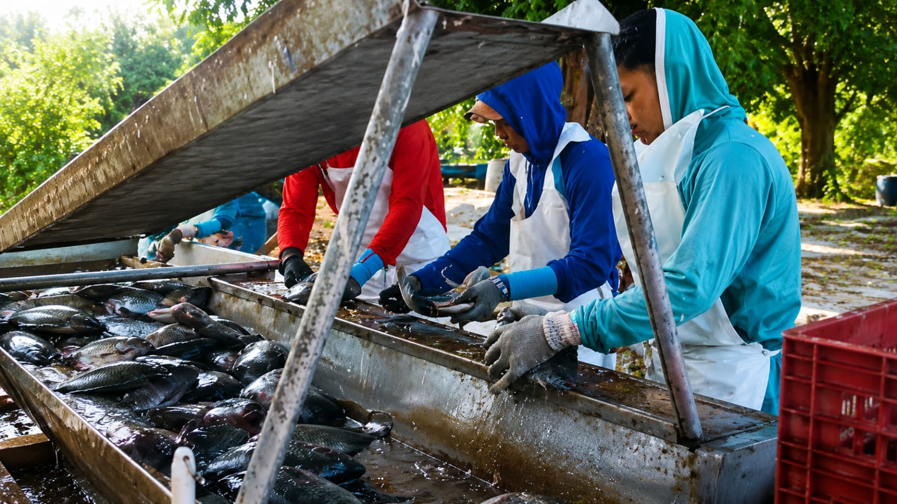

Etapas da Despesca
1. Preparação
Redução gradual do nível da água e organização da equipe.
2. Captura
Utilização de redes apropriadas para minimizar danos.
3. Transporte
Encaminhamento rápido para comercialização ou processamento.
Benefícios de uma Boa Despesca
✔ Menor estresse dos peixes
✔ Melhor qualidade da carne
✔ Redução de perdas
✔ Maior valor comercial